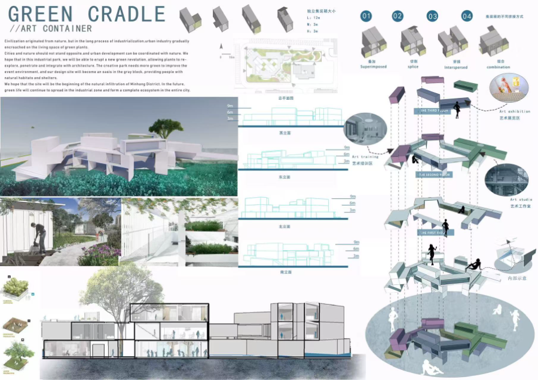
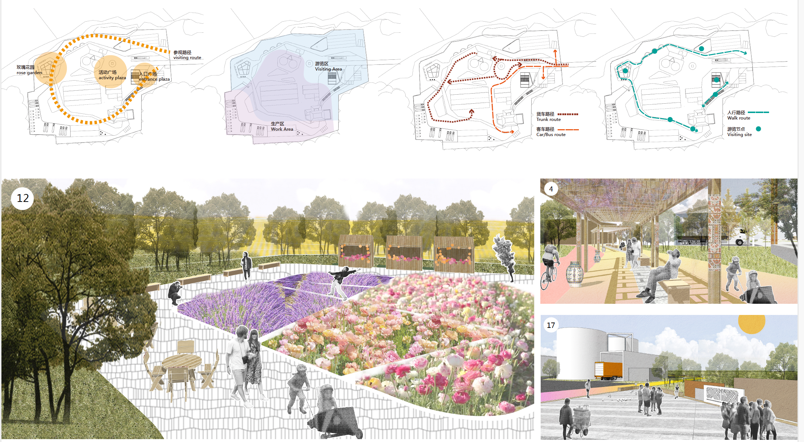

Ecological design competitions
Before the research, there was design. These two projects are where the questions started, on real sites, with real trade-offs between people and the life a place can hold.
Birds Advance,
People Retreat
A bird-priority green space for the Huangpu River estuary
At the cross-confluence of the Huangpu River, we asked a simple question with hard consequences: what would a site look like if birds came first and people stepped back? The design organises the estuary around habitat, giving the core of the site to birds and holding human activity to its edges.
Resilient, low-disturbance zones let the shoreline flood and recover, and the planting is built for shelter and food rather than display. It was a design argument that a city can choose to make room for other species, and it is the question the research later set out to answer.
CHSLA National Student Landscape Architecture Design Competition, Third Prize (graduate group), 2019. Team: Niu Shuang, Qiu Yeshan, Zheng Chenlu, Hu.

Green Cradle
A container architecture competition proposing a stacked planted structure that grows an ecological green space out of a reusable industrial frame.
With Jiayi Zhu.


Reading a City on Foot
Field research in Bulgaria, Shanghai social-practice programme
Leading a small team, I spent a field season reading a city the slow way, on foot, mapping how people use public space and how green and built fabric fit together. The work was less about proposing a plan than about learning to see a place on its own terms, through observation, documentation, and conversation.
It shaped how I approach every site since: start by understanding what is already there before deciding what to change.
Shanghai social-practice programme, Second Prize, 2018. Team leader, with Jin Chuhan, Xie Hongli, and Long Zeyu.
Press coverage

Designing for birds without evidence about what actually supports them is what sent me into the research. The estuary scheme asked the question; the doctoral work is the attempt to answer it.